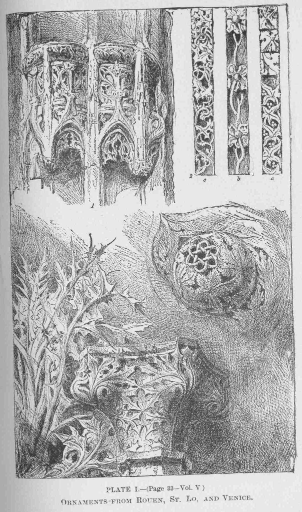
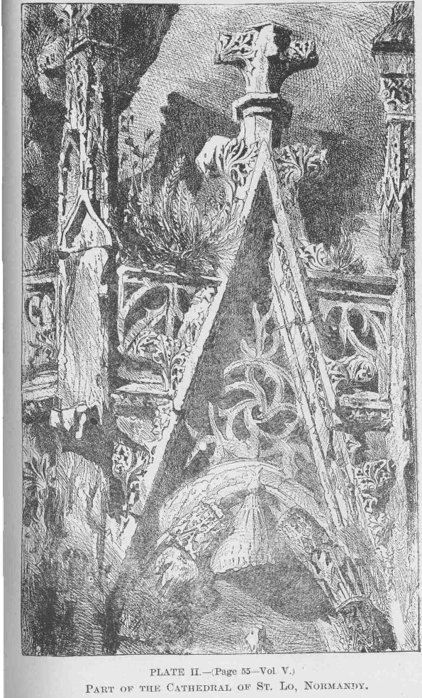
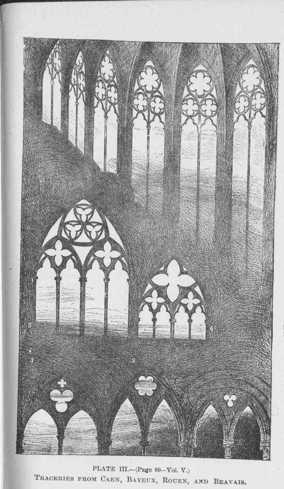
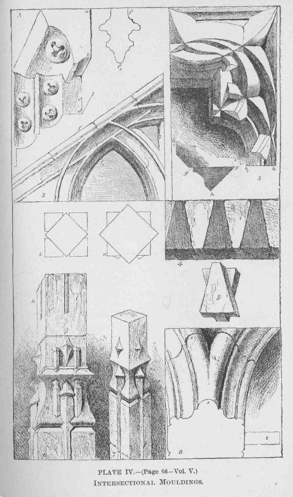

Some years ago, in conversation with an artist whose works, perhaps, alone, in the present day, unite perfection of drawing with resplendence of color, the writer made some inquiry respecting the general means by which this latter quality was most easily to be attained. The reply was as concise as it was comprehensive--"Know what you have to do, and do it"--comprehensive, not only as regarded the branch of art to which it temporarily applied, but as expressing the great principle of success in every direction of human effort; for I believe that failure is less frequently attributable to either insufficiency of means or impatience of labor, than to a confused understanding of the thing actually to be done; and therefore, while it is properly a subject of ridicule, and sometimes of blame, that men propose to themselves a perfection of any kind, which reason, temperately consulted, might have shown to be impossible with the means at their command, it is a more dangerous error to permit the consideration of means to interfere with our conception, or, as is not impossible, even hinder our acknowledgment of goodness and perfection in themselves. And this is the more cautiously to be remembered; because, while a man's sense and conscience, aided by Revelation, are always enough, if earnestly directed, to enable him to discover what is right, neither his sense, nor conscience, nor feeling, are ever enough, because they are not intended, to determine for him what is possible. He knows neither his own strength nor that of his fellows, neither the exact dependence to be placed on his allies nor resistance to be expected from his opponents. These are questions respecting which passion may warp his conclusions, and ignorance must limit them; but it is his own fault if either interfere with the apprehension of duty, or the acknowledgment of right. And, as far as I have taken cognizance of the causes of the many failures to which the efforts of intelligent men are liable, more especially in matters political, they seem to me more largely to spring from this single error than from all others, that the inquiry into the doubtful, and in some sort inexplicable, relations of capability, chance, resistance, and inconvenience, invariably precedes, even if it do not altogether supersede, the determination of what is absolutely desirable and just. Nor is it any wonder that sometimes the too cold calculation of our powers should reconcile us too easily to our shortcomings, and even lead us into the fatal error of supposing that our conjectural utmost is in itself well, or, in other words, that the necessity of offences renders them inoffensive.
What is true of human polity seems to me not less so of the distinctively political art of Architecture. I have long felt convinced of the necessity, in order to its progress, of some determined effort to extricate from the confused mass of partial traditions and dogmata with which it has become encumbered during imperfect or restricted practice, those large principles of right which are applicable to every stage and style of it. Uniting the technical and imaginative elements as essentially as humanity does soul and body, it shows the same infirmly balanced liability to the prevalence of the lower part over the higher, to the interference of the constructive, with the purity and simplicity of the reflective, element. This tendency, like every other form of materialism, is increasing with the advance of the age; and the only laws which resist it, based upon partial precedents, and already regarded with disrespect as decrepit, if not with defiance as tyrannical, are evidently inapplicable to the new forms and functions of the art, which the necessities of the day demand. How many these necessities may become, cannot be conjectured; they rise, strange and impatient, out of every modern shadow of change. How far it may be possible to meet them without a sacrifice of the essential characters of architectural art, cannot be determined by specific calculation or observance. There is no law, no principle, based on past practice, which may not be overthrown in a moment, by the arising of a new condition, or the invention of a new material; and the most rational, if not the only, mode of averting the danger of an utter dissolution of all that is systematic and consistent in our practice, or of ancient authority in our judgment, is to cease for a little while, our endeavors to deal with the multiplying host of particular abuses, restraints, or requirements; and endeavor to determine, as the guides of every effort, some constant, general, and irrefragable laws of right--laws, which based upon man's nature, not upon his knowledge, may possess so far the unchangeableness of the one, as that neither the increase nor imperfection of the other may be able to assault or invalidate them.
There are, perhaps, no such laws peculiar to any one art. Their range necessarily includes the entire horizon of man's action. But they have modified forms and operations belonging to each of his pursuits, and the extent of their authority cannot surely be considered as a diminution of its weight. Those peculiar aspects of them which belong to the first of the arts, I have endeavored to trace in the following pages; and since, if truly stated, they must necessarily be, not only safeguards against every form of error, but sources of every measure of success, I do not think that I claim too much for them in calling them the Lamps of Architecture, nor that it is indolence, in endeavoring to ascertain the true nature and nobility of their fire, to refuse to enter into any curious or special questioning of the innumerable hindrances by which their light has been too often distorted or overpowered.
Had this farther examination been attempted, the work would have become certainly more invidious, and perhaps less useful, as liable to errors which are avoided by the present simplicity of its plan. Simple though it be, its extent is too great to admit of any adequate accomplishment, unless by a devotion of time which the writer did not feel justified in withdrawing from branches of inquiry in which the prosecution of works already undertaken has engaged him. Both arrangements and nomenclature are those of convenience rather than of system; the one is arbitrary and the other illogical: nor is it pretended that all, or even the greater number of, the principles necessary to the well-being of the art, are included in the inquiry. Many, however, of considerable importance will be found to develope themselves incidentally from those more specially brought forward.
Graver apology is necessary for an apparently graver fault. It has been just said, that there is no branch of human work whose constant laws have not close analogy with those which govern every other mode of man's exertion. But, more than this, exactly as we reduce to greater simplicity and surety any one group of these practical laws, we shall find them passing the mere condition of connection or analogy, and becoming the actual expression of some ultimate nerve or fibre of the mighty laws which govern the moral world. However mean or inconsiderable the act, there is something in the well doing of it, which has fellowship with the noblest forms of manly virtue; and the truth, decision, and temperance, which we reverently regard as honorable conditions of the spiritual being, have a representative or derivative influence over the works of the hand, the movements of the frame, and the action of the intellect.
And as thus every action, down even to the drawing of a line or utterance of a syllable, is capable of a peculiar dignity in the manner of it, which we sometimes express by saying it is truly done (as a line or tone is true), so also it is capable of dignity still higher in the motive of it. For there is no action so slight, nor so mean, but it may be done to a great purpose, and ennobled therefore; nor is any purpose so great but that slight actions may help it, and may be so done as to help it much, most especially that chief of all purposes, the pleasing of God. Hence George Herbert--
"A servant with this clause Makes drudgery divine; Who sweeps a room, as for thy laws, Makes that and the action fine."
Therefore, in the pressing or recommending of any act or manner of acting, we have choice of two separate lines of argument: one based on representation of the expediency or inherent value of the work, which is often small, and always disputable; the other based on proofs of its relations to the higher orders of human virtue, and of its acceptableness, so far as it goes, to Him who is the origin of virtue. The former is commonly the more persuasive method, the latter assuredly the more conclusive; only it is liable to give offence, as if there were irreverence in adducing considerations so weighty in treating subjects of small temporal importance. I believe, however, that no error is more thoughtless than this. We treat God with irreverence by banishing Him from our thoughts, not by referring to His will on slight occasions. His is not the finite authority or intelligence which cannot be troubled with small things. There is nothing so small but that we may honor God by asking His guidance of it, or insult Him by taking it into our own hands; and what is true of the Deity is equally true of His Revelation. We use it most reverently when most habitually: our insolence is in ever acting without reference to it, our true honoring of it is in its universal application. I have been blamed for the familiar introduction of its sacred words. I am grieved to have given pain by so doing; but my excuse must be my wish that those words were made the ground of every argument and the test of every action. We have them not often enough on our lips, nor deeply enough in our memories, nor loyally enough in our lives. The snow, the vapor, and the stormy wind fulfil His word. Are our acts and thoughts lighter and wilder than these--that we should forget it?
I have therefore ventured, at the risk of giving to some passages the appearance of irreverence, to take the higher line of argument wherever it appeared clearly traceable: and this, I would ask the reader especially to observe, not merely because I think it the best mode of reaching ultimate truth, still less because I think the subject of more importance than many others; but because every subject should surely, at a period like the present, be taken up in this spirit, or not at all. The aspect of the years that approach us is as solemn as it is full of mystery; and the weight of evil against which we have to contend, is increasing like the letting out of water. It is no time for the idleness of metaphysics, or the entertainment of the arts. The blasphemies of the earth are sounding louder, and its miseries heaped heavier every day; and if, in the midst of the exertion which every good man is called upon to put forth for their repression or relief, it is lawful to ask for a thought, for a moment, for a lifting of the finger, in any direction but that of the immediate and overwhelming need, it is at least incumbent upon us to approach the questions in which we would engage him, in the spirit which has become the habit of his mind, and in the hope that neither his zeal nor his usefulness may be checked by the withdrawal of an hour which has shown him how even those things which seemed mechanical, indifferent, or contemptible, depend for their perfection upon the acknowledgment of the sacred principles of faith, truth, and obedience, for which it has become the occupation of his life to contend.
THE SEVEN LAMPS OF ARCHITECTURE.
I. Architecture is the art which so disposes and adorns the edifices raised by man for whatsoever uses, that the sight of them contributes to his mental health, power and pleasure.
It is very necessary, in the outset of all inquiry, to distinguish carefully between Architecture and Building.
To build, literally to confirm, is by common understanding to put together and adjust the several pieces of any edifice or receptacle of a considerable size. Thus we have church building, house building, ship building, and coach building. That one edifice stands, another floats, and another is suspended on iron springs, makes no difference in the nature of the art, if so it may be called, of building or edification. The persons who profess that art, are severally builders, ecclesiastical, naval, or of whatever other name their work may justify; but building does not become architecture merely by the stability of what it erects; and it is no more architecture which raises a church, or which fits it to receive and contain with comfort a required number of persons occupied in certain religious offices, than it is architecture which makes a carriage commodious or a ship swift. I do not, of course, mean that the word is not often, or even may not be legitimately, applied in such a sense (as we speak of naval architecture); but in that sense architecture ceases to be one of the fine arts, and it is therefore better not to run the risk, by loose nomenclature, of the confusion which would arise, and has often arisen, from extending principles which belong altogether to building, into the sphere of architecture proper.
Let us, therefore, at once confine the name to that art which, taking up and admitting, as conditions of its working, the necessities and common uses of the building, impresses on its form certain characters venerable or beautiful, but otherwise unnecessary. Thus, I suppose, no one would call the laws architectural which determine the height of a breastwork or the position of a bastion. But if to the stone facing of that bastion be added an unnecessary feature, as a cable moulding, that is Architecture. It would be similarly unreasonable to call battlements or machicolations architectural features, so long as they consist only of an advanced gallery supported on projecting masses, with open intervals beneath for offence. But if these projecting masses be carved beneath into rounded courses, which are useless, and if the headings of the intervals be arched and trefoiled, which is useless, that is Architecture. It may not be always easy to draw the line so sharply and simply, because there are few buildings which have not some pretence or color of being architectural; neither can there be any architecture which is not based on building, nor any good architecture which is not based on good building; but it is perfectly easy and very necessary to keep the ideas distinct, and to understand fully that Architecture concerns itself only with those characters of an edifice which are above and beyond its common use. I say common; because a building raised to the honor of God, or in memory of men, has surely a use to which its architectural adornment fits it; but not a use which limits, by any inevitable necessities, its plan or details.
II. Architecture proper, then, naturally arranges itself under five heads:--
Devotional; including all buildings raised for God's service or honor.
Memorial; including both monuments and tombs.
Civil; including every edifice raised by nations or societies, for purposes of common business or pleasure.
Military; including all private and public architecture of defence.
Domestic; including every rank and kind of dwelling-place.
Now, of the principles which I would endeavor to develope, while all must be, as I have said, applicable to every stage and style of the art, some, and especially those which are exciting rather than directing, have necessarily fuller reference to one kind of building than another; and among these I would place first that spirit which, having influence in all, has nevertheless such especial reference to devotional and memorial architecture--the spirit which offers for such work precious things simply because they are precious; not as being necessary to the building, but as an offering, surrendering, and sacrifice of what is to ourselves desirable. It seems to me, not only that this feeling is in most cases wholly wanting in those who forward the devotional buildings of the present day; but that it would even be regarded as an ignorant, dangerous, or perhaps criminal principle by many among us. I have not space to enter into dispute of all the various objections which may be urged against it--they are many and spacious; but I may, perhaps, ask the reader's patience while I set down those simple reasons which cause me to believe it a good and just feeling, and as well-pleasing to God and honorable in men, as it is beyond all dispute necessary to the production of any great work in the kind with which we are at present concerned.
III. Now, first, to define this Lamp, or Spirit of Sacrifice, clearly. I have said that it prompts us to the offering of precious things merely because they are precious, not because they are useful or necessary. It is a spirit, for instance, which of two marbles, equally beautiful, applicable and durable, would choose the more costly because it was so, and of two kinds of decoration, equally effective, would choose the more elaborate because it was so, in order that it might in the same compass present more cost and more thought. It is therefore most unreasoning and enthusiastic, and perhaps best negatively defined, as the opposite of the prevalent feeling of modern times, which desires to produce the largest results at the least cost.
Of this feeling, then, there are two distinct forms: the first, the wish to exercise self-denial for the sake of self-discipline merely, a wish acted upon in the abandonment of things loved or desired, there being no direct call or purpose to be answered by so doing; and the second, the desire to honor or please some one else by the costliness of the sacrifice. The practice is, in the first case, either private or public; but most frequently, and perhaps most properly, private; while, in the latter case, the act is commonly, and with greatest advantage, public. Now, it cannot but at first appear futile to assert the expediency of self-denial for its own sake, when, for so many sakes, it is every day necessary to a far greater degree than any of us practise it. But I believe it is just because we do not enough acknowledge or contemplate it as a good in itself, that we are apt to fail in its duties when they become imperative, and to calculate, with some partiality, whether the good proposed to others measures or warrants the amount of grievance to ourselves, instead of accepting with gladness the opportunity of sacrifice as a personal advantage. Be this as it may, it is not necessary to insist upon the matter here; since there are always higher and more useful channels of self-sacrifice, for those who choose to practise it, than any connected with the arts.
While in its second branch, that which is especially concerned with the arts, the justice of the feeling is still more doubtful; it depends on our answer to the broad question, Can the Deity be indeed honored by the presentation to Him of any material objects of value, or by any direction of zeal or wisdom which is not immediately beneficial to men?
For, observe, it is not now the question whether the fairness and majesty of a building may or may not answer any moral purpose; it is not the result of labor in any sort of which we are speaking, but the bare and mere costliness--the substance and labor and time themselves: are these, we ask, independently of their result, acceptable offerings to God, and considered by Him as doing Him honor? So long as we refer this question to the decision of feeling, or of conscience, or of reason merely, it will be contradictorily or imperfectly answered; it admits of entire answer only when we have met another and a far different question, whether the Bible be indeed one book or two, and whether the character of God revealed in the Old Testament be other than His character revealed in the New.
IV. Now, it is a most secure truth, that, although the particular ordinances divinely appointed for special purposes at any given period of man's history, may be by the same divine authority abrogated at another, it is impossible that any character of God, appealed to or described in any ordinance past or present, can ever be changed, or understood as changed, by the abrogation of that ordinance. God is one and the same, and is pleased or displeased by the same things for ever, although one part of His pleasure may be expressed at one time rather than another, and although the mode in which His pleasure is to be consulted may be by Him graciously modified to the circumstances of men. Thus, for instance, it was necessary that, in order to the understanding by man of the scheme of Redemption, that scheme should be foreshown from the beginning by the type of bloody sacrifice. But God had no more pleasure in such sacrifice in the time of Moses than He has now; He never accepted as a propitiation for sin any sacrifice but the single one in prospective; and that we may not entertain any shadow of doubt on this subject, the worthlessness of all other sacrifice than this is proclaimed at the very time when typical sacrifice was most imperatively demanded. God was a spirit, and could be worshipped only in spirit and in truth, as singly and exclusively when every day brought its claim of typical and material service or offering, as now when He asks for none but that of the heart.
So, therefore, it is a most safe and sure principle that, if in the manner of performing any rite at any time, circumstances can be traced which we are either told, or may legitimately conclude, pleased God at that time, those same circumstances will please Him at all times, in the performance of all rites or offices to which they may be attached in like manner; unless it has been afterwards revealed that, for some special purpose, it is now His will that such circumstances should be withdrawn. And this argument will have all the more force if it can be shown that such conditions were not essential to the completeness of the rite in its human uses and bearings, and only were added to it as being in themselves pleasing to God.
V. Now, was it necessary to the completeness, as a type, of the Levitical sacrifice, or to its utility as an explanation of divine purposes, that it should cost anything to the person in whose behalf it was offered? On the contrary, the sacrifice which it foreshowed was to be God's free gift; and the cost of, or difficulty of obtaining, the sacrificial type, could only render that type in a measure obscure, and less expressive of the offering which God would in the end provide for all men. Yet this costliness was generally a condition of the acceptableness of the sacrifice. "Neither will I offer unto the Lord my God of that which doth cost me nothing."[B] That costliness, therefore, must be an acceptable condition in all human offerings at all times; for if it was pleasing to God once, it must please Him always, unless directly forbidden by Him afterwards, which it has never been.
[B] 2 Sam. xxiv. 24. Deut. xvi. 16, 17.
Again, was it necessary to the typical perfection of the Levitical offering, that it should be the best of the flock? Doubtless the spotlessness of the sacrifice renders it more expressive to the Christian mind; but was it because so expressive that it was actually, and in so many words, demanded by God? Not at all. It was demanded by Him expressly on the same grounds on which an earthly governor would demand it, as a testimony of respect. "Offer it now unto thy governor."[C] And the less valuable offering was rejected, not because it did not image Christ, nor fulfil the purposes of sacrifice, but because it indicated a feeling that would grudge the best of its possessions to Him who gave them; and because it was a bold dishonoring of God in the sight of man. Whence it may be infallibly concluded, that in whatever offerings we may now see reason to present unto God (I say not what these may be), a condition of their acceptableness will be now, as it was then, that they should be the best of their kind.
[C] Mal. i. 8.
VI. But farther, was it necessary to the carrying out of the Mosaical system, that there should be either art or splendor in the form or services of the tabernacle or temple? Was it necessary to the perfection of any one of their typical offices, that there should be that hanging of blue, and purple, and scarlet? those taches of brass and sockets of silver? that working in cedar and overlaying with gold? One thing at least is evident: there was a deep and awful danger in it; a danger that the God whom they so worshipped, might be associated in the minds of the serfs of Egypt with the gods to whom they had seen similar gifts offered and similar honors paid. The probability, in our times, of fellowship with the feelings of the idolatrous Romanist is absolutely as nothing compared with the danger to the Israelite of a sympathy with the idolatrous Egyptian;[1] no speculative, no unproved danger; but proved fatally by their fall during a month's abandonment to their own will; a fall into the most servile idolatry; yet marked by such offerings to their idol as their leader was, in the close sequel, instructed to bid them offer to God. This danger was imminent, perpetual, and of the most awful kind: it was the one against which God made provision, not only by commandments, by threatenings, by promises, the most urgent, repeated, and impressive; but by temporary ordinances of a severity so terrible as almost to dim for a time, in the eyes of His people, His attribute of mercy. The principal object of every instituted law of that Theocracy, of every judgment sent forth in its vindication, was to mark to the people His hatred of idolatry; a hatred written under their advancing steps, in the blood of the Canaanite, and more sternly still in the darkness of their own desolation, when the children and the sucklings swooned in the streets of Jerusalem, and the lion tracked his prey in the dust of Samaria.[D] Yet against this mortal danger provision was not made in one way (to man's thoughts the simplest, the most natural, the most effective), by withdrawing from the worship of the Divine Being whatever could delight the sense, or shape the imagination, or limit the idea of Deity to place. This one way God refused, demanding for Himself such honors, and accepting for Himself such local dwelling, as had been paid and dedicated to idol gods by heathen worshippers; and for what reason? Was the glory of the tabernacle necessary to set forth or image His divine glory to the minds of His people? What! purple or scarlet necessary to the people who had seen the great river of Egypt run scarlet to the sea, under His condemnation? What! golden lamp and cherub necessary for those who had seen the fires of heaven falling like a mantle on Mount Sinai, and its golden courts opened to receive their mortal lawgiver? What! silver clasp and fillet necessary when they had seen the silver waves of the Red Sea clasp in their arched hollows the corpses of the horse and his rider? Nay--not so. There was but one reason, and that an eternal one; that as the covenant that He made with men was accompanied with some external sign of its continuance, and of His remembrance of it, so the acceptance of that covenant might be marked and signified by use, in some external sign of their love and obedience, and surrender of themselves and theirs to His will; and that their gratitude to Him, and continual remembrance of Him, might have at once their expression and their enduring testimony in the presentation to Him, not only of the firstlings of the herd and fold, not only of the fruits of the earth and the tithe of time, but of all treasures of wisdom and beauty; of the thought that invents, and the hand that labors; of wealth of wood, and weight of stone; of the strength of iron, and of the light of gold.
[D] Lam. ii. 11. 2 Kings xvii. 25.
And let us not now lose sight of this broad and unabrogated principle--I might say, incapable of being abrogated, so long as men shall receive earthly gifts from God. Of all that they have His tithe must be rendered to Him, or in so far and in so much He is forgotten: of the skill and of the treasure, of the strength and of the mind, of the time and of the toil, offering must be made reverently; and if there be any difference between the Levitical and the Christian offering, it is that the latter may be just so much the wider in its range as it is less typical in its meaning, as it is thankful instead of sacrificial. There can be no excuse accepted because the Deity does not now visibly dwell in His temple; if He is invisible it is only through our failing faith: nor any excuse because other calls are more immediate or more sacred; this ought to be done, and not the other left undone. Yet this objection, as frequent as feeble, must be more specifically answered.
VII. It has been said--it ought always to be said, for it is true--that a better and more honorable offering is made to our Master in ministry to the poor, in extending the knowledge of His name, in the practice of the virtues by which that name is hallowed, than in material presents to His temple. Assuredly it is so: woe to all who think that any other kind or manner of offering may in any wise take the place of these! Do the people need place to pray, and calls to hear His word? Then it is no time for smoothing pillars or carving pulpits; let us have enough first of walls and roofs. Do the people need teaching from house to house, and bread from day to day? Then they are deacons and ministers we want, not architects. I insist on this, I plead for this; but let us examine ourselves, and see if this be indeed the reason for our backwardness in the lesser work. The question is not between God's house and His poor: it is not between God's house and His Gospel. It is between God's house and ours. Have we no tesselated colors on our floors? no frescoed fancies on our roofs? no niched statuary in our corridors? no gilded furniture in our chambers? no costly stones in our cabinets? Has even the tithe of these been offered? They are, or they ought to be, the signs that enough has been devoted to the great purposes of human stewardship, and that there remains to us what we can spend in luxury; but there is a greater and prouder luxury than this selfish one--that of bringing a portion of such things as these into sacred service, and presenting them for a memorial[E] that our pleasure as well as our toil has been hallowed by the remembrance of Him who gave both the strength and the reward. And until this has been done, I do not see how such possessions can be retained in happiness. I do not understand the feeling which would arch our own gates and pave our own thresholds, and leave the church with its narrow door and foot-worn sill; the feeling which enriches our own chambers with all manner of costliness, and endures the bare wall and mean compass of the temple. There is seldom even so severe a choice to be made, seldom so much self-denial to be exercised. There are isolated cases, in which men's happiness and mental activity depend upon a certain degree of luxury in their houses; but then this is true luxury, felt and tasted, and profited by. In the plurality of instances nothing of the kind is attempted, nor can be enjoyed; men's average resources cannot reach it; and that which they can reach, gives them no pleasure, and might be spared. It will be seen, in the course of the following chapters, that I am no advocate for meanness of private habitation. I would fain introduce into it all magnificence, care, and beauty, where they are possible; but I would not have that useless expense in unnoticed fineries or formalities; cornicings of ceilings and graining of doors, and fringing of curtains, and thousands such; things which have become foolishly and apathetically habitual--things on whose common appliance hang whole trades, to which there never yet belonged the blessing of giving one ray of real pleasure, or becoming of the remotest or most contemptible use--things which cause half the expense of life, and destroy more than half its comfort, manliness, respectability, freshness, and facility. I speak from experience: I know what it is to live in a cottage with a deal floor and roof, and a hearth of mica slate; and I know it to be in many respects healthier and happier than living between a Turkey carpet and gilded ceiling, beside a steel grate and polished fender. I do not say that such things have not their place and propriety; but I say this, emphatically, that the tenth part of the expense which is sacrificed in domestic vanities, if not absolutely and meaninglessly lost in domestic discomforts, and incumbrances, would, if collectively offered and wisely employed, build a marble church for every town in England; such a church as it should be a joy and a blessing even to pass near in our daily ways and walks, and as it would bring the light into the eyes to see from afar, lifting its fair height above the purple crowd of humble roofs.
[E] Num. xxxi. 54. Psa. lxxvi. 11.
VIII. I have said for every town: I do not want a marble church for every village; nay, I do not want marble churches at all for their own sake, but for the sake of the spirit that would build them. The church has no need of any visible splendors; her power is independent of them, her purity is in some degree opposed to them. The simplicity of a pastoral sanctuary is lovelier than the majesty of an urban temple; and it may be more than questioned whether, to the people, such majesty has ever been the source of any increase of effective piety; but to the builders it has been, and must ever be. It is not the church we want, but the sacrifice; not the emotion of admiration, but the act of adoration: not the gift, but the giving.[2] And see how much more charity the full understanding of this might admit, among classes of men of naturally opposite feelings; and how much more nobleness in the work. There is no need to offend by importunate, self-proclaiming splendor. Your gift may be given in an unpresuming way. Cut one or two shafts out of a porphyry whose preciousness those only would know who would desire it to be so used; add another month's labor to the undercutting of a few capitals, whose delicacy will not be seen nor loved by one beholder of ten thousand; see that the simplest masonry of the edifice be perfect and substantial; and to those who regard such things, their witness will be clear and impressive; to those who regard them not, all will at least be inoffensive. But do not think the feeling itself a folly, or the act itself useless. Of what use was that dearly-bought water of the well of Bethlehem with which the King of Israel slaked the dust of Adullam?--yet was not thus better than if he had drunk it? Of what use was that passionate act of Christian sacrifice, against which, first uttered by the false tongue, the very objection we would now conquer took a sullen tone for ever?[F] So also let us not ask of what use our offering is to the church: it is at least better for us than if it had been retained for ourselves. It may be better for others also: there is, at any rate, a chance of this; though we must always fearfully and widely shun the thought that the magnificence of the temple can materially add to the efficiency of the worship or to the power of the ministry. Whatever we do, or whatever we offer, let it not interfere with the simplicity of the one, or abate, as if replacing, the zeal of the other. That is the abuse and fallacy of Romanism, by which the true spirit of Christian offering is directly contradicted. The treatment of the Papists' temple is eminently exhibitory; it is surface work throughout; and the danger and evil of their church decoration lie, not in its reality--not in the true wealth and art of it, of which the lower people are never cognizant--but in its tinsel and glitter, in the gilding of the shrine and painting of the image, in embroidery of dingy robes and crowding of imitated gems; all this being frequently thrust forward to the concealment of what is really good or great in their buildings.[3] Of an offering of gratitude which is neither to be exhibited nor rewarded, which is neither to win praise nor purchase salvation, the Romanist (as such) has no conception.
[F] John xii. 5.
IX. While, however, I would especially deprecate the imputation of any other acceptableness or usefulness to the gift itself than that which it receives from the spirit of its presentation, it may be well to observe, that there is a lower advantage which never fails to accompany a dutiful observance of any right abstract principle. While the first fruits of his possessions were required from the Israelite as a testimony of fidelity, the payment of those first fruits was nevertheless rewarded, and that connectedly and specifically, by the increase of those possessions. Wealth, and length of days, and peace, were the promised and experienced rewards of his offering, though they were not to be the objects of it. The tithe paid into the storehouse was the expressed condition of the blessing which there should not be room enough to receive. And it will be thus always: God never forgets any work or labor of love; and whatever it may be of which the first and best proportions or powers have been presented to Him, he will multiply and increase sevenfold. Therefore, though it may not be necessarily the interest of religion to admit the service of the arts, the arts will never flourish until they have been primarily devoted to that service--devoted, both by architect and employer; by the one in scrupulous, earnest, affectionate design; by the other in expenditure at least more frank, at least less calculating, than that which he would admit in the indulgence of his own private feelings. Let this principle be but once fairly acknowledged among us; and however it may be chilled and repressed in practice, however feeble may be its real influence, however the sacredness of it may be diminished by counter-workings of vanity and self-interest, yet its mere acknowledgment would bring a reward; and with our present accumulation of means and of intellect, there would be such an impulse and vitality given to art as it has not felt since the thirteenth century. And I do not assert this as other than a national consequence: I should, indeed, expect a larger measure of every great and spiritual faculty to be always given where those faculties had been wisely and religiously employed; but the impulse to which I refer, would be, humanly speaking, certain; and would naturally result from obedience to the two great conditions enforced by the Spirit of Sacrifice, first, that we should in everything do our best; and, secondly, that we should consider increase of apparent labor as an increase of beauty in the building. A few practical deductions from these two conditions, and I have done.
X. For the first: it is alone enough to secure success, and it is for want of observing it that we continually fail. We are none of us so good architects as to be able to work habitually beneath our strength; and yet there is not a building that I know of, lately raised, wherein it is not sufficiently evident that neither architect nor builder has done his best. It is the especial characteristic of modern work. All old work nearly has been hard work. It may be the hard work of children, of barbarians, of rustics; but it is always their utmost. Ours has as constantly the look of money's worth, of a stopping short wherever and whenever we can, of a lazy compliance with low conditions; never of a fair putting forth of our strength. Let us have done with this kind of work at once: cast off every temptation to it: do not let us degrade ourselves voluntarily, and then mutter and mourn over our short comings; let us confess our poverty or our parsimony, but not belie our human intellect. It is not even a question of how much we are to do, but of how it is to be done; it is not a question of doing more, but of doing better. Do not let us boss our roofs with wretched, half-worked, blunt-edged rosettes; do not let us flank our gates with rigid imitations of mediæval statuary. Such things are mere insults to common sense, and only unfit us for feeling the nobility of their prototypes. We have so much, suppose, to be spent in decoration; let us go to the Flaxman of his time, whoever he may be, and bid him carve for us a single statue, frieze or capital, or as many as we can afford, compelling upon him the one condition, that they shall be the best he can do; place them where they will be of the most value, and be content. Our other capitals may be mere blocks, and our other niches empty. No matter: better our work unfinished than all bad. It may be that we do not desire ornament of so high an order; choose, then, a less developed style, also, if you will, rougher material; the law which we are enforcing requires only that what we pretend to do and to give, shall both be the best of their kind; choose, therefore, the Norman hatchet work, instead of the Flaxman frieze and statue, but let it be the best hatchet work; and if you cannot afford marble, use Caen stone, but from the best bed; and if not stone, brick, but the best brick; preferring always what is good of a lower order of work or material, to what is bad of a higher; for this is not only the way to improve every kind of work, and to put every kind of material to better use; but it is more honest and unpretending, and is in harmony with other just, upright, and manly principles, whose range we shall have presently to take into consideration.
XI. The other condition which we had to notice, was the value of the appearance of labor upon architecture. I have spoken of this before;[G] and it is, indeed, one of the most frequent sources of pleasure which belong to the art, always, however, within certain somewhat remarkable limits. For it does not at first appear easily to be explained why labor, as represented by materials of value, should, without sense of wrong or error, bear being wasted; while the waste of actual workmanship is always painful, so soon as it is apparent. But so it is, that, while precious materials may, with a certain profusion and negligence, be employed for the magnificence of what is seldom seen, the work of man cannot be carelessly and idly bestowed, without an immediate sense of wrong; as if the strength of the living creature were never intended by its Maker to be sacrificed in vain, though it is well for us sometimes to part with what we esteem precious of substance, as showing that in such a service it becomes but dross and dust. And in the nice balance between the straitening of effort or enthusiasm on the one hand, and vainly casting it away upon the other, there are more questions than can be met by any but very just and watchful feeling. In general it is less the mere loss of labor that offends us, than the lack of judgment implied by such loss; so that if men confessedly work for work's sake, and it does not appear that they are ignorant where or how to make their labor tell, we shall not be grossly offended. On the contrary, we shall be pleased if the work be lost in carrying out a principle, or in avoiding a deception. It, indeed, is a law properly belonging to another part of our subject, but it may be allowably stated here, that, whenever, by the construction of a building, some parts of it are hidden from the eye which are the continuation of others bearing some consistent ornament, it is not well that the ornament should cease in the parts concealed; credit is given for it, and it should not be deceptively withdrawn: as, for instance, in the sculpture of the backs of the statues of a temple pediment; never, perhaps, to be seen, but yet not lawfully to be left unfinished. And so in the working out of ornaments in dark concealed places, in which it is best to err on the side of completion; and in the carrying round of string courses, and other such continuous work; not but that they may stop sometimes, on the point of going into some palpably impenetrable recess, but then let them stop boldly and markedly, on some distinct terminal ornament, and never be supposed to exist where they do not. The arches of the towers which flank the transepts of Rouen Cathedral have rosette ornaments on their spandrils, on the three visible sides; none on the side towards the roof. The right of this is rather a nice point for question.
[G] Mod. Painters, Part I. Sec. 1, Chap. 3.
XII. Visibility, however, we must remember, depends, not only on situation, but on distance; and there is no way in which work is more painfully and unwisely lost than in its over delicacy on parts distant from the eye. Here, again, the principle of honesty must govern our treatment: we must not work any kind of ornament which is, perhaps, to cover the whole building (or at least to occur on all parts of it) delicately where it is near the eye, and rudely where it is removed from it. That is trickery and dishonesty. Consider, first, what kinds of ornaments will tell in the distance and what near, and so distribute them, keeping such as by their nature are delicate, down near the eye, and throwing the bold and rough kinds of work to the top; and if there be any kind which is to be both near and far off, take care that it be as boldly and rudely wrought where it is well seen as where it is distant, so that the spectator may know exactly what it is, and what it is worth. Thus chequered patterns, and in general such ornaments as common workmen can execute, may extend over the whole building; but bas-reliefs, and fine niches and capitals, should be kept down, and the common sense of this will always give a building dignity, even though there be some abruptness or awkwardness, in the resulting arrangements. Thus at San Zeno at Verona, the bas-reliefs, full of incident and interest are confined to a parallelogram of the front, reaching to the height of the capitals of the columns of the porch. Above these, we find a simple though most lovely, little arcade; and above that, only blank wall, with square face shafts. The whole effect is tenfold grander and better than if the entire façade had been covered with bad work, and may serve for an example of the way to place little where we cannot afford much. So, again, the transept gates of Rouen[H] are covered with delicate bas-reliefs (of which I shall speak at greater length presently) up to about once and a half a man's height; and above that come the usual and more visible statues and niches. So in the campanile at Florence, the circuit of bas-reliefs is on its lowest story; above that come its statues; and above them all its pattern mosaic, and twisted columns, exquisitely finished, like all Italian work of the time, but still, in the eye of the Florentine, rough and commonplace by comparison with the bas-reliefs. So generally the most delicate niche work and best mouldings of the French Gothic are in gates and low windows well within sight; although, it being the very spirit of that style to trust to its exuberance for effect, there is occasionally a burst upwards and blossoming unrestrainably to the sky, as in the pediment of the west front of Rouen, and in the recess of the rose window behind it, where there are some most elaborate flower-mouldings, all but invisible from below, and only adding a general enrichment to the deep shadows that relieve the shafts of the advanced pediment. It is observable, however, that this very work is bad flamboyant, and has corrupt renaissance characters in its detail as well as use; while in the earlier and grander north and south gates, there is a very noble proportioning of the work to the distance, the niches and statues which crown the northern one, at a height of about one hundred feet from the ground, being alike colossal and simple; visibly so from below, so as to induce no deception, and yet honestly and well-finished above, and all that they are expected to be; the features very beautiful, full of expression, and as delicately wrought as any work of the period.
[H] Henceforward, for the sake of convenience, when I name any cathedral town in this manner, let me be understood to speak of its cathedral church.
XIII. It is to be remembered, however, that while the ornaments in every fine ancient building, without exception so far as I am aware, are most delicate at the base, they are often in greater effective quantity on the upper parts. In high towers this is perfectly natural and right, the solidity of the foundation being as necessary as the division and penetration of the superstructure; hence the lighter work and richly pierced crowns of late Gothic towers. The campanile of Giotto at Florence, already alluded to, is an exquisite instance of the union of the two principles, delicate bas-reliefs adorning its massy foundation, while the open tracery of the upper windows attracts the eye by its slender intricacy, and a rich cornice crowns the whole. In such truly fine cases of this disposition the upper work is effective by its quantity and intricacy only, as the lower portions by delicacy; so also in the Tour de Beurre at Rouen, where, however, the detail is massy throughout, subdividing into rich meshes as it ascends. In the bodies of buildings the principle is less safe, but its discussion is not connected with our present subject.
XIV. Finally, work may be wasted by being too good for its material, or too fine to bear exposure; and this, generally a characteristic of late, especially of renaissance, work, is perhaps the worst fault of all. I do not know anything more painful or pitiful than the kind of ivory carving with which the Certosa of Pavia, and part of the Colleone sepulchral chapel at Bergamo, and other such buildings, are incrusted, of which it is not possible so much as to think without exhaustion; and a heavy sense of the misery it would be, to be forced to look at it at all. And this is not from the quantity of it, nor because it is bad work--much of it is inventive and able; but because it looks as if it were only fit to be put in inlaid cabinets and velveted caskets, and as if it could not bear one drifting shower or gnawing frost. We are afraid for it, anxious about it, and tormented by it; and we feel that a massy shaft and a bold shadow would be worth it all. Nevertheless, even in cases like these, much depends on the accomplishment of the great ends of decoration. If the ornament does its duty--if it is ornament, and its points of shade and light tell in the general effect, we shall not be offended by finding that the sculptor in his fulness of fancy has chosen to give much more than these mere points of light, and has composed them of groups of figures. But if the ornament does not answer its purpose, if it have no distant, no truly decorative power; if generally seen it be a mere incrustation and meaningless roughness, we shall only be chagrined by finding when we look close, that the incrustation has cost years of labor and has millions of figures and histories in it and would be the better of being seen through a Stanhope lens. Hence the greatness of the northern Gothic as contrasted with the latest Italian. It reaches nearly the same extreme of detail; but it never loses sight of its architectural purpose, never fails in its decorative power; not a leaflet in it but speaks, and speaks far off, too; and so long as this be the case, there is no limit to the luxuriance in which such work may legitimately and nobly be bestowed.

XV. No limit: it is one of the affectations of architects to speak of overcharged ornament. Ornament cannot be overcharged if it be good, and is always overcharged when it is bad. I have given, on the opposite page (fig. 1), one of the smallest niches of the central gate of Rouen. That gate I suppose to be the most exquisite piece of pure flamboyant work existing; for though I have spoken of the upper portions, especially the receding window, as degenerate, the gate itself is of a purer period, and has hardly any renaissance taint. There are four strings of these niches (each with two figures beneath it) round the porch, from the ground to the top of the arch, with three intermediate rows of larger niches, far more elaborate; besides the six principal canopies of each outer pier. The total number of the subordinate niches alone, each worked like that in the plate, and each with a different pattern of traceries in each compartment, is one hundred and seventy-six.[4] Yet in all this ornament there is not one cusp, one finial that is useless--not a stroke of the chisel is in vain; the grace and luxuriance of it all are visible--sensible rather--even to the uninquiring eye; and all its minuteness does not diminish the majesty, while it increases the mystery, of the noble and unbroken vault. It is not less the boast of some styles that they can bear ornament, than of others that they can do without it; but we do not often enough reflect that those very styles, of so haughty simplicity, owe part of their pleasurableness to contrast, and would be wearisome if universal. They are but the rests and monotones of the art; it is to its far happier, far higher, exaltation that we owe those fair fronts of variegated mosaic, charged with wild fancies and dark hosts of imagery, thicker and quainter than ever filled the depth of midsummer dream; those vaulted gates, trellised with close leaves; those window-labyrinths of twisted tracery and starry light; those misty masses of multitudinous pinnacle and diademed tower; the only witnesses, perhaps that remain to us of the faith and fear of nations. All else for which the builders sacrificed, has passed away--all their living interests, and aims, and achievements. We know not for what they labored, and we see no evidence of their reward. Victory, wealth, authority, happiness--all have departed, though bought by many a bitter sacrifice. But of them, and their life, and their toil upon the earth, one reward, one evidence, is left to us in those gray heaps of deep-wrought stone. They have taken with them to the grave their powers, their honors, and their errors; but they have left us their adoration.
I. There is a marked likeness between the virtues of man and the enlightenment of the globe he inhabits--the same diminishing gradation in vigor up to the limits of their domains, the same essential separation from their contraries--the same twilight at the meeting of the two: a something wider belt than the line where the world rolls into night, that strange twilight of the virtues; that dusky debateable land, wherein zeal becomes impatience, and temperance becomes severity, and justice becomes cruelty, and faith superstition, and each and all vanish into gloom.
Nevertheless, with the greater number of them, though their dimness increases gradually, we may mark the moment of their sunset; and, happily, may turn the shadow back by the way by which it had gone down: but for one, the line of the horizon is irregular and undefined; and this, too, the very equator and girdle of them all--Truth; that only one of which there are no degrees, but breaks and rents continually; that pillar of the earth, yet a cloudy pillar; that golden and narrow line, which the very powers and virtues that lean upon it bend, which policy and prudence conceal, which kindness and courtesy modify, which courage overshadows with his shield, imagination covers with her wings, and charity dims with her tears. How difficult must the maintenance of that authority be, which, while it has to restrain the hostility of all the worst principles of man, has also to restrain the disorders of his best--which is continually assaulted by the one, and betrayed by the other, and which regards with the same severity the lightest and the boldest violations of its law! There are some faults slight in the sight of love, some errors slight in the estimate of wisdom; but truth forgives no insult, and endures no stain.
We do not enough consider this; nor enough dread the slight and continual occasions of offence against her. We are too much in the habit of looking at falsehood in its darkest associations, and through the color of its worst purposes. That indignation which we profess to feel at deceit absolute, is indeed only at deceit malicious. We resent calumny, hypocrisy and treachery, because they harm us, not because they are untrue. Take the detraction and the mischief from the untruth, and we are little offended by it; turn it into praise, and we may be pleased with it. And yet it is not calumny nor treachery that does the largest sum of mischief in the world; they are continually crushed, and are felt only in being conquered. But it is the glistening and softly spoken lie; the amiable fallacy; the patriotic lie of the historian, the provident lie of the politician, the zealous lie of the partizan, the merciful lie of the friend, and the careless lie of each man to himself, that cast that black mystery over humanity, through which any man who pierces, we thank as we would thank one who dug a well in a desert; happy in that the thirst for truth still remains with us, even when we have wilfully left the fountains of it.
It would be well if moralists less frequently confused the greatness of a sin with its unpardonableness. The two characters are altogether distinct. The greatness of a fault depends partly on the nature of the person against whom it is committed, partly upon the extent of its consequences. Its pardonableness depends, humanly speaking, on the degree of temptation to it. One class of circumstances determines the weight of the attaching punishment; the other, the claim to remission of punishment: and since it is not easy for men to estimate the relative weight, nor possible for them to know the relative consequences, of crime, it is usually wise in them to quit the care of such nice measurements, and to look to the other and clearer condition of culpability; esteeming those faults worst which are committed under least temptation. I do not mean to diminish the blame of the injurious and malicious sin, of the selfish and deliberate falsity; yet it seems to me, that the shortest way to check the darker forms of deceit is to set watch more scrupulous against those which have mingled, unregarded and unchastised, with the current of our life. Do not let us lie at all. Do not think of one falsity as harmless, and another as slight, and another as unintended. Cast them all aside: they may be light and accidental; but they are an ugly soot from the smoke of the pit, for all that; and it is better that our hearts should be swept clean of them, without over care as to which is largest or blackest. Speaking truth is like writing fair, and comes only by practice; it is less a matter of will than of habit, and I doubt if any occasion can be trivial which permits the practice and formation of such a habit. To speak and act truth with constancy and precision is nearly as difficult, and perhaps as meritorious, as to speak it under intimidation or penalty; and it is a strange thought how many men there are, as I trust, who would hold to it at the cost of fortune or life, for one who would hold to it at the cost of a little daily trouble. And seeing that of all sin there is, perhaps, no one more flatly opposite to the Almighty, no one more "wanting the good of virtue and of being," than this of lying, it is surely a strange insolence to fall into the foulness of it on light or on no temptation, and surely becoming an honorable man to resolve that, whatever semblances or fallacies the necessary course of his life may compel him to bear or to believe, none shall disturb the serenity of his voluntary actions, nor diminish the reality of his chosen delights.
II. If this be just and wise for truth's sake, much more is it necessary for the sake of the delights over which she has influence. For, as I advocated the expression of the Spirit of Sacrifice in the acts and pleasures of men, not as if thereby those acts could further the cause of religion, but because most assuredly they might therein be infinitely ennobled themselves, so I would have the Spirit or Lamp of Truth clear in the hearts of our artists and handicraftsmen, not as if the truthful practice of handicrafts could far advance the cause of truth, but because I would fain see the handicrafts themselves urged by the spurs of chivalry: and it is, indeed, marvellous to see what power and universality there is in this single principle, and how in the consulting or forgetting of it lies half the dignity or decline of every art and act of man. I have before endeavored to show its range and power in painting; and I believe a volume, instead of a chapter, might be written on its authority over all that is great in architecture. But I must be content with the force of instances few and familiar, believing that the occasions of its manifestation may be more easily discovered by a desire to be true, than embraced by an analysis of truth.
Only it is very necessary in the outset to mark clearly wherein consists the essence of fallacy as distinguished from supposition.
III. For it might be at first thought that the whole kingdom of imagination was one of deception also. Not so: the action of the imagination is a voluntary summoning of the conceptions of things absent or impossible; and the pleasure and nobility of the imagination partly consist in its knowledge and contemplation of them as such, i.e. in the knowledge of their actual absence or impossibility at the moment of their apparent presence or reality. When the imagination deceives it becomes madness. It is a noble faculty so long as it confesses its own ideality; when it ceases to confess this, it is insanity. All the difference lies in the fact of the confession, in there being no deception. It is necessary to our rank as spiritual creatures, that we should be able to invent and to behold what is not; and to our rank as moral creatures that we should know and confess at the same time that it is not.
IV. Again, it might be thought, and has been thought, that the whole art of painting is nothing else than an endeavor to deceive. Not so: it is, on the contrary, a statement of certain facts, in the clearest possible way. For instance: I desire to give an account of a mountain or of a rock; I begin by telling its shape. But words will not do this distinctly, and I draw its shape, and say, "This was its shape." Next: I would fain represent its color; but words will not do this either, and I dye the paper, and say, "This was its color." Such a process may be carried on until the scene appears to exist, and a high pleasure may be taken in its apparent existence. This is a communicated act of imagination, but no lie. The lie can consist only in an assertion of its existence (which is never for one instant made, implied, or believed), or else in false statements of forms and colors (which are, indeed, made and believed to our great loss, continually). And observe, also, that so degrading a thing is deception in even the approach and appearance of it, that all painting which even reaches the mark of apparent realization, is degraded in so doing. I have enough insisted on this point in another place.
V. The violations of truth, which dishonor poetry and painting, are thus for the most part confined to the treatment of their subjects. But in architecture another and a less subtle, more contemptible, violation of truth is possible; a direct falsity of assertion respecting the nature of material, or the quantity of labor. And this is, in the full sense of the word, wrong; it is as truly deserving of reprobation as any other moral delinquency; it is unworthy alike of architects and of nations; and it has been a sign, wherever it has widely and with toleration existed, of a singular debasement of the arts; that it is not a sign of worse than this, of a general want of severe probity, can be accounted for only by our knowledge of the strange separation which has for some centuries existed between the arts and all other subjects of human intellect, as matters of conscience. This withdrawal of conscientiousness from among the faculties concerned with art, while it has destroyed the arts themselves, has also rendered in a measure nugatory the evidence which otherwise they might have presented respecting the character of the respective nations among whom they have been cultivated; otherwise, it might appear more than strange that a nation so distinguished for its general uprightness and faith as the English, should admit in their architecture more of pretence, concealment, and deceit, than any other of this or of past time.
They are admitted in thoughtlessness, but with fatal effect upon the art in which they are practised. If there were no other causes for the failures which of late have marked every great occasion for architectural exertion, these petty dishonesties would be enough to account for all. It is the first step and not the least, towards greatness to do away with these; the first, because so evidently and easily in our power. We may not be able to command good, or beautiful, or inventive architecture; but we can command an honest architecture: the meagreness of poverty may be pardoned, the sternness of utility respected; but what is there but scorn for the meanness of deception?
VI. Architectural Deceits are broadly to be considered under three heads:--
1st. The suggestion of a mode of structure or support, other than the true one; as in pendants of late Gothic roofs.
2d. The painting of surfaces to represent some other material than that of which they actually consist (as in the marbling of wood), or the deceptive representation of sculptured ornament upon them.
3d. The use of cast or machine-made ornaments of any kind.
Now, it may be broadly stated, that architecture will be noble exactly in the degree in which all these false expedients are avoided. Nevertheless, there are certain degrees of them, which, owing to their frequent usage, or to other causes, have so far lost the nature of deceit as to be admissible; as, for instance, gilding, which is in architecture no deceit, because it is therein not understood for gold; while in jewellery it is a deceit, because it is so understood, and therefore altogether to be reprehended. So that there arise, in the application of the strict rules of right, many exceptions and niceties of conscience; which let us as briefly as possible examine.
VII. 1st. Structural Deceits. I have limited these to the determined and purposed suggestion of a mode of support other than the true one. The architect is not bound to exhibit structure; nor are we to complain of him for concealing it, any more than we should regret that the outer surfaces of the human frame conceal much of its anatomy; nevertheless, that building will generally be the noblest, which to an intelligent eye discovers the great secrets of its structure, as an animal form does, although from a careless observer they may be concealed. In the vaulting of a Gothic roof it is no deceit to throw the strength into the ribs of it, and make the intermediate vault a mere shell. Such a structure would be presumed by an intelligent observer, the first time he saw such a roof; and the beauty of its traceries would be enhanced to him if they confessed and followed the lines of its main strength. If, however, the intermediate shell were made of wood instead of stone, and whitewashed to look like the rest,--this would, of course, be direct deceit, and altogether unpardonable.
There is, however, a certain deception necessarily occurring in Gothic architecture, which relates, not to the points, but to the manner, of support. The resemblance in its shafts and ribs to the external relations of stems and branches, which has been the ground of so much foolish speculation, necessarily induces in the mind of the spectator a sense or belief of a correspondent internal structure; that is to say, of a fibrous and continuous strength from the root into the limbs, and an elasticity communicated upwards, sufficient for the support of the ramified portions. The idea of the real conditions, of a great weight of ceiling thrown upon certain narrow, jointed lines, which have a tendency partly to be crushed, and partly to separate and be pushed outwards, is with difficulty received; and the more so when the pillars would be, if unassisted, too slight for the weight, and are supported by external flying buttresses, as in the apse of Beauvais, and other such achievements of the bolder Gothic. Now, there is a nice question of conscience in this, which we shall hardly settle but by considering that, when the mind is informed beyond the possibility of mistake as to the true nature of things, the affecting it with a contrary impression, however distinct, is no dishonesty, but on the contrary, a legitimate appeal to the imagination. For instance, the greater part of the happiness which we have in contemplating clouds, results from the impression of their having massive, luminous, warm, and mountain-like surfaces; and our delight in the sky frequently depends upon our considering it as a blue vault. But we know the contrary, in both instances; we know the cloud to be a damp fog, or a drift of snow flakes; and the sky to be a lightless abyss. There is, therefore, no dishonesty, while there is much delight, in the irresistibly contrary impression. In the same way, so long as we see the stones and joints, and are not deceived as to the points of support in any piece of architecture, we may rather praise than regret the dextrous artifices which compel us to feel as if there were fibre in its shafts and life in its branches. Nor is even the concealment of the support of the external buttress reprehensible, so long as the pillars are not sensibly inadequate to their duty. For the weight of a roof is a circumstance of which the spectator generally has no idea, and the provisions for it, consequently, circumstances whose necessity or adaptation he could not understand. It is no deceit, therefore, when the weight to be borne is necessarily unknown, to conceal also the means of bearing it, leaving only to be perceived so much of the support as is indeed adequate to the weight supposed. For the shafts do, indeed, bear as much as they are ever imagined to bear, and the system of added support is no more, as a matter of conscience, to be exhibited, than, in the human or any other form, mechanical provisions for those functions which are themselves unperceived.
But the moment that the conditions of weight are comprehended, both truth and feeling require that the conditions of support should be also comprehended. Nothing can be worse, either as judged by the taste or the conscience, than affectedly inadequate supports--suspensions in air, and other such tricks and vanities. Mr. Hope wisely reprehends, for this reason, the arrangement of the main piers of St. Sophia at Constantinople. King's College Chapel, Cambridge, is a piece of architectural juggling, if possible still more to be condemned, because less sublime.
VIII. With deceptive concealments of structure are to be classed, though still more blameable, deceptive assumptions of it--the introduction of members which should have, or profess to have, a duty, and have none. One of the most general instances of this will be found in the form of the flying buttress in late Gothic. The use of that member is, of course, to convey support from one pier to another when the plan of the building renders it necessary or desirable that the supporting masses should be divided into groups, the most frequent necessity of this kind arising from the intermediate range of chapels or aisles between the nave or choir walls and their supporting piers. The natural, healthy, and beautiful arrangement is that of a steeply sloping bar of stone, sustained by an arch with its spandril carried farthest down on the lowest side, and dying into the vertical of the outer pier; that pier being, of course, not square, but rather a piece of wall set at right angles to the supported walls, and, if need be, crowned by a pinnacle to give it greater weight. The whole arrangement is exquisitely carried out in the choir of Beauvais. In later Gothic the pinnacle became gradually a decorative member, and was used in all places merely for the sake of its beauty. There is no objection to this; it is just as lawful to build a pinnacle for its beauty as a tower; but also the buttress became a decorative member; and was used, first, where it was not wanted, and, secondly, in forms in which it could be of no use, becoming a mere tie, not between the pier and wall, but between the wall and the top of the decorative pinnacle, thus attaching itself to the very point where its thrust, if it made any, could not be resisted. The most flagrant instance of this barbarism that I remember (though it prevails partially in all the spires of the Netherlands), is the lantern of St. Ouen at Rouen, where the pierced buttress, having an ogee curve, looks about as much calculated to bear a thrust as a switch of willow; and the pinnacles, huge and richly decorated, have evidently no work to do whatsoever, but stand round the central tower, like four idle servants, as they are--heraldic supporters, that central tower being merely a hollow crown, which needs no more buttressing than a basket does. In fact, I do not know anything more strange or unwise than the praise lavished upon this lantern; it is one of the basest pieces of Gothic in Europe; its flamboyant traceries of the last and most degraded forms;[5] and its entire plan and decoration resembling, and deserving little more credit than, the burnt sugar ornaments of elaborate confectionery. There are hardly any of the magnificent and serene constructions of the early Gothic which have not, in the course of time, been gradually thinned and pared away into these skeletons, which sometimes indeed, when their lines truly follow the structure of the original masses, have an interest like that of the fibrous framework of leaves from which the substance has been dissolved, but which are usually distorted as well as emaciated, and remain but the sickly phantoms and mockeries of things that were; they are to true architecture what the Greek ghost was to the armed and living frame; and the very winds that whistle through the threads of them, are to the diapasoned echoes of the ancient walls, as to the voice of the man was the pining of the spectre.[6]
IX. Perhaps the most fruitful source of these kinds of corruption which we have to guard against in recent times, is one which, nevertheless, comes in a "questionable shape," and of which it is not easy to determine the proper laws and limits; I mean the use of iron. The definition of the art of architecture, given in the first chapter, is independent of its materials: nevertheless, that art having been, up to the beginning of the present century, practised for the most part in clay, stone, or wood, it has resulted that the sense of proportion and the laws of structure have been based, the one altogether, the other in great part, on the necessities consequent on the employment of those materials; and that the entire or principal employment of metallic framework would, therefore, be generally felt as a departure from the first principles of the art. Abstractedly there appears no reason why iron should not be used as well as wood; and the time is probably near when a new system of architectural laws will be developed, adapted entirely to metallic construction. But I believe that the tendency of all present sympathy and association is to limit the idea of architecture to non-metallic work; and that not without reason. For architecture being in its perfection the earliest, as in its elements it is necessarily the first, of arts, will always precede, in any barbarous nation, the possession of the science necessary either for the obtaining or the management of iron. Its first existence and its earliest laws must, therefore, depend upon the use of materials accessible in quantity, and on the surface of the earth; that is to say, clay, wood, or stone: and as I think it cannot but be generally felt that one of the chief dignities of architecture is its historical use; and since the latter is partly dependent on consistency of style, it will be felt right to retain as far as may be, even in periods of more advanced science, the materials and principles of earlier ages.
X. But whether this be granted me or not, the fact is, that every idea respecting size, proportion, decoration, or construction, on which we are at present in the habit of acting or judging, depends on presupposition of such materials: and as I both feel myself unable to escape the influence of these prejudices, and believe that my readers will be equally so, it may be perhaps permitted to me to assume that true architecture does not admit iron as a constructive material,[7] and that such works as the cast-iron central spire of Rouen Cathedral, or the iron roofs and pillars of our railway stations, and of some of our churches, are not architecture at all. Yet it is evident that metals may, and sometimes must, enter into the construction to a certain extent, as nails in wooden architecture, and therefore as legitimately rivets and solderings in stone; neither can we well deny to the Gothic architect the power of supporting statues, pinnacles, or traceries by iron bars; and if we grant this I do not see how we can help allowing Brunelleschi his iron chain around the dome of Florence, or the builders of Salisbury their elaborate iron binding of the central tower.[8] If, however, we would not fall into the old sophistry of the grains of corn and the heap, we must find a rule which may enable us to stop somewhere. This rule is, I think, that metals may be used as a cement but not as a support. For as cements of other kinds are often so strong that the stones may easier be broken than separated, and the wall becomes a solid mass without for that reason losing the character of architecture, there is no reason why, when a nation has obtained the knowledge and practice of iron work, metal rods or rivets should not be used in the place of cement, and establish the same or a greater strength and adherence, without in any wise inducing departure from the types and system of architecture before established; nor does it make any difference except as to sightliness, whether the metal bands or rods so employed, be in the body of the wall or on its exterior, or set as stays and cross-bands; so only that the use of them be always and distinctly one which might be superseded by mere strength of cement; as for instance if a pinnacle or mullion be propped or tied by an iron band, it is evident that the iron only prevents the separation of the stones by lateral force, which the cement would have done, had it been strong enough. But the moment that the iron in the least degree takes the place of the stone, and acts by its resistance to crushing, and bears superincumbent weight, or if it acts by its own weight as a counterpoise, and so supersedes the use of pinnacles or buttresses in resisting a lateral thrust, or if, in the form of a rod or girder, it is used to do what wooden beams would have done as well, that instant the building ceases, so far as such applications of metal extend, to be true architecture.
XI. The limit, however, thus determined, is an ultimate one, and it is well in all things to be cautious how we approach the utmost limit of lawfulness; so that, although the employment of metal within this limit cannot be considered as destroying the very being and nature of architecture, it will, if, extravagant and frequent, derogate from the dignity of the work, as well as (which is especially to our present point) from its honesty. For although the spectator is not informed as to the quantity or strength of the cement employed, he will generally conceive the stones of the building to be separable and his estimate of the skill of the architect will be based in a great measure on his supposition of this condition, and of the difficulties attendant upon it: so that it is always more honorable, and it has a tendency to render the style of architecture both more masculine and more scientific, to employ stone and mortar simply as such, and to do as much as possible with the weight of the one and the strength of the other, and rather sometimes to forego a grace, or to confess a weakness, than attain the one, or conceal the other, by means verging upon dishonesty.
Nevertheless, where the design is of such delicacy and slightness as, in some parts of very fair and finished edifices, it is desirable that it should be; and where both its completion and security are in a measure dependent on the use of metal, let not such use be reprehended; so only that as much is done as may be, by good mortar and good masonry; and no slovenly workmanship admitted through confidence in the iron helps; for it is in this license as in that of wine, a man may use it for his infirmities, but not for his nourishment.
XII. And, in order to avoid an over use of this liberty, it would be well to consider what application may be conveniently made of the dovetailing and various adjusting of stones; for when any artifice is necessary to help the mortar, certainly this ought to come before the use of metal, for it is both safer and more honest. I cannot see that any objection can be made to the fitting of the stones in any shapes the architect pleases: for although it would not be desirable to see buildings put together like Chinese puzzles, there must always be a check upon such an abuse of the practice in its difficulty; nor is it necessary that it should be always exhibited, so that it be understood by the spectator as an admitted help, and that no principal stones are introduced in positions apparently impossible for them to retain, although a riddle here and there, in unimportant features, may sometimes serve to draw the eye to the masonry, and make it interesting, as well as to give a delightful sense of a kind of necromantic power in the architect. There is a pretty one in the lintel of the lateral door of the cathedral of Prato (Plate IV. fig. 4.); where the maintenance of the visibly separate stones, alternate marble and serpentine, cannot be understood until their cross-cutting is seen below. Each block is, of course, of the form given in fig. 5.
XIII. Lastly, before leaving the subject of structural deceits, I would remind the architect who thinks that I am unnecessarily and narrowly limiting his resources or his art, that the highest greatness and the highest wisdom are shown, the first by a noble submission to, the second by a thoughtful providence for, certain voluntarily admitted restraints. Nothing is more evident than this, in that supreme government which is the example, as it is the centre, of all others. The Divine Wisdom is, and can be, shown to us only in its meeting and contending with the difficulties which are voluntarily, and for the sake of that contest, admitted by the Divine Omnipotence: and these difficulties, observe, occur in the form of natural laws or ordinances, which might, at many times and in countless ways, be infringed with apparent advantage, but which are never infringed, whatever costly arrangements or adaptations their observance may necessitate for the accomplishment of given purposes. The example most apposite to our present subject is the structure of the bones of animals. No reason can be given, I believe, why the system of the higher animals should not have been made capable, as that of the Infusoria is, of secreting flint, instead of phosphate of lime, or more naturally still, carbon; so framing the bones of adamant at once. The elephant or rhinoceros, had the earthy part of their bones been made of diamond, might have been as agile and light as grasshoppers, and other animals might have been framed far more magnificently colossal than any that walk the earth. In other worlds we may, perhaps, see such creations; a creation for every element, and elements infinite. But the architecture of animals here, is appointed by God to be a marble architecture, not a flint nor adamant architecture; and all manner of expedients are adopted to attain the utmost degree of strength and size possible under that great limitation. The jaw of the ichthyosaurus is pieced and riveted, the leg of the megatherium is a foot thick, and the head of the myodon has a double skull; we, in our wisdom, should, doubtless, have given the lizard a steel jaw, and the myodon a cast-iron headpiece, and forgotten the great principle to which all creation bears witness, that order and system are nobler things than power. But God shows us in Himself, strange as it may seem, not only authoritative perfection, but even the perfection of Obedience--an obedience to His own laws: and in the cumbrous movement of those unwieldiest of His creatures we are reminded, even in His divine essence, of that attribute of uprightness in the human creature "that sweareth to his own hurt and changeth not."
XIV. 2d. Surface Deceits. These may be generally defined as the inducing the supposition of some form or material which does not actually exist; as commonly in the painting of wood to represent marble, or in the painting of ornaments in deceptive relief, &c. But we must be careful to observe, that the evil of them consists always in definitely attempted deception, and that it is a matter of some nicety to mark the point where deception begins or ends.
Thus, for instance, the roof of Milan Cathedral is seemingly covered with elaborate fan tracery, forcibly enough painted to enable it, in its dark and removed position, to deceive a careless observer. This is, of course, gross degradation; it destroys much of the dignity even of the rest of the building, and is in the very strongest terms to be reprehended.
The roof of the Sistine Chapel has much architectural design in grissaille mingled with the figures of its frescoes; and the effect is increase of dignity.
In what lies the distinctive character?
In two points, principally:--First. That the architecture is so closely associated with the figures, and has so grand fellowship with them in its forms and cast shadows, that both are at once felt to be of a piece; and as the figures must necessarily be painted, the architecture is known to be so too. There is thus no deception.
Second. That so great a painter as Michael Angelo would always stop short in such minor parts of his design, of the degree of vulgar force which would be necessary to induce the supposition of their reality; and, strangely as it may sound, would never paint badly enough to deceive.
But though right and wrong are thus found broadly opposed in works severally so mean and so mighty as the roof of Milan and that of the Sistine, there are works neither so great nor so mean, in which the limits of right are vaguely defined, and will need some care to determine; care only, however, to apply accurately the broad principle with which we set out, that no form nor material is to be deceptively represented.
XV. Evidently, then, painting, confessedly such, is no deception: it does not assert any material whatever. Whether it be on wood or on stone, or, as will naturally be supposed, on plaster, does not matter. Whatever the material, good painting makes it more precious; nor can it ever be said to deceive respecting the ground of which it gives us no information. To cover brick with plaster, and this plaster with fresco, is, therefore, perfectly legitimate; and as desirable a mode of decoration as it is constant in the great periods. Verona and Venice are now seen deprived of more than half their former splendor; it depended far more on their frescoes than their marbles. The plaster, in this case, is to be considered as the gesso ground on panel or canvas. But to cover brick with cement, and to divide this cement with joints that it may look like stone, is to tell a falsehood; and is just as contemptible a procedure as the other is noble.
It being lawful to paint then, is it lawful to paint everything? So long as the painting is confessed--yes; but if, even in the slightest degree, the sense of it be lost, and the thing painted be supposed real--no. Let us take a few instances. In the Campo Santo at Pisa, each fresco is surrounded with a border composed of flat colored patterns of great elegance--no part of it in attempted relief. The certainty of flat surface being thus secured, the figures, though the size of life, do not deceive, and the artist thenceforward is at liberty to put forth his whole power, and to lead us through fields and groves, and depths of pleasant landscape, and to soothe us with the sweet clearness of far off sky, and yet never lose the severity of his primal purpose of architectural decoration.
In the Camera di Correggio of San Lodovico at Parma, the trellises of vine shadow the walls, as if with an actual arbor; and the troops of children, peeping through the oval openings, luscious in color and faint in light, may well be expected every instant to break through, or hide behind the covert. The grace of their attitudes, and the evident greatness of the whole work, mark that it is painting, and barely redeem it from the charge of falsehood; but even so saved, it is utterly unworthy to take a place among noble or legitimate architectural decoration.
In the cupola of the duomo of Parma the same painter has represented the Assumption with so much deceptive power, that he has made a dome of some thirty feet diameter look like a cloud-wrapt opening in the seventh heaven, crowded with a rushing sea of angels. Is this wrong? Not so: for the subject at once precludes the possibility of deception. We might have taken the vines for a veritable pergoda, and the children for its haunting ragazzi; but we know the stayed clouds and moveless angels must be man's work; let him put his utmost strength to it and welcome, he can enchant us, but cannot betray.
We may thus apply the rule to the highest, as well as the art of daily occurrence, always remembering that more is to be forgiven to the great painter than to the mere decorative workman; and this especially, because the former, even in deceptive portions, will not trick us so grossly; as we have just seen in Correggio, where a worse painter would have made the thing look like life at once. There is, however, in room, villa, or garden decoration, some fitting admission of trickeries of this kind, as of pictured landscapes at the extremities of alleys and arcades, and ceilings like skies, or painted with prolongations upwards of the architecture of the walls, which things have sometimes a certain luxury and pleasureableness in places meant for idleness, and are innocent enough as long as they are regarded as mere toys.
XVI. Touching the false representation of material, the question is infinitely more simple, and the law more sweeping; all such imitations are utterly base and inadmissible. It is melancholy to think of the time and expense lost in marbling the shop fronts of London alone, and of the waste of our resources in absolute vanities, in things about which no mortal cares, by which no eye is ever arrested, unless painfully, and which do not add one whit to comfort or cleanliness, or even to that great object of commercial art--conspicuousness. But in architecture of a higher rank, how much more is it to be condemned? I have made it a rule in the present work not to blame specifically; but I may, perhaps, be permitted, while I express my sincere admiration of the very noble entrance and general architecture of the British Museum, to express also my regret that the noble granite foundation of the staircase should be mocked at its landing by an imitation, the more blameable because tolerably successful. The only effect of it is to cast a suspicion upon the true stones below, and upon every bit of granite afterwards encountered. One feels a doubt, after it, of the honesty of Memnon himself. But even this, however derogatory to the noble architecture around it, is less painful than the want of feeling with which, in our cheap modern churches, we suffer the wall decorator to erect about the altar frameworks and pediments daubed with mottled color, and to dye in the same fashions such skeletons or caricatures of columns as may emerge above the pews; this is not merely bad taste; it is no unimportant or excusable error which brings even these shadows of vanity and falsehood into the house of prayer. The first condition which just feeling requires in church furniture is, that it should be simple and unaffected, not fictitious nor tawdry. It may be in our power to make it beautiful, but let it at least be pure; and if we cannot permit much to the architect, do not let us permit anything to the upholsterer; if we keep to solid stone and solid wood, whitewashed, if we like, for cleanliness' sake (for whitewash has so often been used as the dress of noble things that it has thence received a kind of nobility itself), it must be a bad design indeed which is grossly offensive. I recollect no instance of a want of sacred character, or of any marked and painful ugliness, in the simplest or the most awkwardly built village church, where stone and wood were roughly and nakedly used, and the windows latticed with white glass. But the smoothly stuccoed walls, the flat roofs with ventilator ornaments, the barred windows with jaundiced borders and dead ground square panes, the gilded or bronzed wood, the painted iron, the wretched upholstery of curtains and cushions, and pew heads and altar railings, and Birmingham metal candlesticks, and, above all, the green and yellow sickness of the false marble--disguises all, observe; falsehoods all--who are they who like these things? who defend them? who do them? I have never spoken to any one who did like them, though to many who thought them matters of no consequence. Perhaps not to religion (though I cannot but believe that there are many to whom, as to myself, such things are serious obstacles to the repose of mind and temper which should precede devotional exercises); but to the general tone of our judgment and feeling--yes; for assuredly we shall regard, with tolerance, if not with affection, whatever forms of material things we have been in the habit of associating with our worship, and be little prepared to detect or blame hypocrisy, meanness, and disguise in other kinds of decoration when we suffer objects belonging to the most solemn of all services to be tricked out in a fashion so fictitious and unseemly.
XVII. Painting, however, is not the only mode in which material may be concealed, or rather simulated; for merely to conceal is, as we have seen, no wrong. Whitewash, for instance, though often (by no means always) to be regretted as a concealment, is not to be blamed as a falsity. It shows itself for what it is, and asserts nothing of what is beneath it. Gilding has become, from its frequent use, equally innocent. It is understood for what it is, a film merely, and is, therefore, allowable to any extent. I do not say expedient: it is one of the most abused means of magnificence we possess, and I much doubt whether any use we ever make of it, balances that loss of pleasure, which, from the frequent sight and perpetual suspicion of it, we suffer in the contemplation of anything that is verily of gold. I think gold was meant to be seldom seen and to be admired as a precious thing; and I sometimes wish that truth should so far literally prevail as that all should be gold that glittered, or rather that nothing should glitter that was not gold. Nevertheless, nature herself does not dispense with such semblance, but uses light for it; and I have too great a love for old and saintly art to part with its burnished field, or radiant nimbus; only it should be used with respect, and to express magnificence, or sacredness, and not in lavish vanity, or in sign painting. Of its expedience, however, any more than of that of color, it is not here the place to speak; we are endeavoring to determine what is lawful, not what is desirable. Of other and less common modes of disguising surface, as of powder of lapis lazuli, or mosaic imitations of colored stones, I need hardly speak. The rule will apply to all alike, that whatever is pretended, is wrong; commonly enforced also by the exceeding ugliness and insufficient appearance of such methods, as lately in the style of renovation by which half the houses in Venice have been defaced, the brick covered first with stucco, and this painted with zigzag veins in imitation of alabaster. But there is one more form of architectural fiction, which is so constant in the great periods that it needs respectful judgment. I mean the facing of brick with precious stone.
XVIII. It is well known, that what is meant by a church's being built of marble is, in nearly all cases, only that a veneering of marble has been fastened on the rough brick wall, built with certain projections to receive it; and that what appear to be massy stones, are nothing more than external slabs.
Now, it is evident, that, in this case, the question of right is on the same ground as in that of gilding. If it be clearly understood that a marble facing does not pretend or imply a marble wall, there is no harm in it; and as it is also evident that, when very precious stones are used, as jaspers and serpentines, it must become, not only an extravagant and vain increase of expense, but sometimes an actual impossibility, to obtain mass of them enough to build with, there is no resource but this of veneering; nor is there anything to be alleged against it on the head of durability, such work having been by experience found to last as long, and in as perfect condition, as any kind of masonry. It is, therefore, to be considered as simply an art of mosaic on a large scale, the ground being of brick, or any other material; and when lovely stones are to be obtained, it is a manner which should be thoroughly understood, and often practised. Nevertheless, as we esteem the shaft of a column more highly for its being of a single block, and as we do not regret the loss of substance and value which there is in things of solid gold, silver, agate, or ivory; so I think the walls themselves may be regarded with a more just complacency if they are known to be all of noble substance; and that rightly weighing the demands of the two principles of which we have hitherto spoken--Sacrifice and Truth, we should sometimes rather spare external ornament than diminish the unseen value and consistency of what we do; and I believe that a better manner of design, and a more careful and studious, if less abundant decoration would follow, upon the consciousness of thoroughness in the substance. And, indeed, this is to be remembered, with respect to all the points we have examined; that while we have traced the limits of license, we have not fixed those of that high rectitude which refuses license. It is thus true that there is no falsity, and much beauty in the use of external color, and that it is lawful to paint either pictures or patterns on whatever surfaces may seem to need enrichment. But it is not less true, that such practices are essentially unarchitectural; and while we cannot say that there is actual danger in an over use of them, seeing that they have been always used most lavishly in the times of most noble art, yet they divide the work into two parts and kinds, one of less durability than the other, which dies away from it in process of ages, and leaves it, unless it have noble qualities of its own, naked and bare. That enduring noblesse I should, therefore, call truly architectural; and it is not until this has been secured that the accessory power of painting may be called in, for the delight of the immediate time; nor this, as I think, until every resource of a more stable kind has been exhausted. The true colors of architecture are those of natural stone, and I would fain see these taken advantage of to the full. Every variety of hue, from pale yellow to purple, passing through orange, red, and brown, is entirely at our command; nearly every kind of green and gray is also attainable: and with these, and pure white, what harmonies might we not achieve? Of stained and variegated stone, the quantity is unlimited, the kinds innumerable; where brighter colors are required, let glass, and gold protected by glass, be used in mosaic--a kind of work as durable as the solid stone, and incapable of losing its lustre by time--and let the painter's work be reserved for the shadowed loggia and inner chamber. This is the true and faithful way of building; where this cannot be, the device of external coloring may, indeed, be employed without dishonor; but it must be with the warning reflection, that a time will come when such aids must pass away, and when the building will be judged in its lifelessness, dying the death of the dolphin. Better the less bright, more enduring fabric. The transparent alabasters of San Miniato, and the mosaics of St. Mark's, are more warmly filled, and more brightly touched, by every return of morning and evening rays; while the hues of our cathedrals have died like the iris out of the cloud; and the temples whose azure and purple once flamed above the Grecian promontories, stand in their faded whiteness, like snows which the sunset has left cold.

XIX. The last form of fallacy which it will be remembered we had to deprecate, was the substitution of cast or machine work for that of the hand, generally expressible as Operative Deceit.
There are two reasons, both weighty, against this practice; one, that all cast and machine work is bad, as work; the other, that it is dishonest. Of its badness, I shall speak in another place, that being evidently no efficient reason against its use when other cannot be had. Its dishonesty, however, which, to my mind, is of the grossest kind, is, I think, a sufficient reason to determine absolute and unconditional rejection of it.
Ornament, as I have often before observed, has two entirely distinct sources of agreeableness: one, that of the abstract beauty of its forms, which, for the present, we will suppose to be the same whether they come from the hand or the machine; the other, the sense of human labor and care spent upon it. How great this latter influence we may perhaps judge, by considering that there is not a cluster of weeds growing in any cranny of ruin which has not a beauty in all respects nearly equal, and, in some, immeasurably superior, to that of the most elaborate sculpture of its stones: and that all our interest in the carved work, our sense of its richness, though it is tenfold less rich than the knots of grass beside it; of its delicacy, though it is a thousand fold less delicate; of its admirableness, though a millionfold less admirable; results from our consciousness of its being the work of poor, clumsy, toilsome man. Its true delightfulness depends on our discovering in it the record of thoughts, and intents, and trials, and heart-breakings--of recoveries and joyfulnesses of success: all this can be traced by a practised eye; but, granting it even obscure, it is presumed or understood; and in that is the worth of the thing, just as much as the worth of anything else we call precious. The worth of a diamond is simply the understanding of the time it must take to look for it before it can be cut. It has an intrinsic value besides, which the diamond has not (for a diamond has no more real beauty than a piece of glass); but I do not speak of that at present; I place the two on the same ground; and I suppose that hand-wrought ornament can no more be generally known from machine work, than a diamond can be known from paste; nay, that the latter may deceive, for a moment, the mason's, as the other the jeweller's eye; and that it can be detected only by the closest examination. Yet exactly as a woman of feeling would not wear false jewels, so would a builder of honor disdain false ornaments. The using of them is just as downright and inexcusable a lie. You use that which pretends to a worth which it has not; which pretends to have cost, and to be, what it did not, and is not; it is an imposition, a vulgarity, an impertinence, and a sin. Down with it to the ground, grind it to powder, leave its ragged place upon the wall, rather; you have not paid for it, you have no business with it, you do not want it. Nobody wants ornaments in this world, but everybody wants integrity. All the fair devices that ever were fancied, are not worth a lie. Leave your walls as bare as a planed board, or build them of baked mud and chopped straw, if need be; but do not rough-cast them with falsehood.
This, then, being our general law, and I hold it for a more imperative one than any other I have asserted; and this kind of dishonesty the meanest, as the least necessary; for ornament is an extravagant and inessential thing; and, therefore, if fallacious, utterly base--this, I say, being our general law, there are, nevertheless, certain exceptions respecting particular substances and their uses.
XX. Thus in the use of brick; since that is known to be originally moulded, there is no reason why it should not be moulded into diverse forms. It will never be supposed to have been cut, and therefore, will cause no deception; it will have only the credit it deserves. In flat countries, far from any quarry of stone, cast brick may be legitimately, and most successfully, used in decoration, and that elaborate, and even refined. The brick mouldings of the Palazzo Pepoli at Bologna, and those which run round the market-place of Vercelli, are among the richest in Italy. So also, tile and porcelain work, of which the former is grotesquely, but successfully, employed in the domestic architecture of France, colored tiles being inserted in the diamond spaces between the crossing timbers; and the latter admirably in Tuscany, in external bas-reliefs, by the Robbia family, in which works, while we cannot but sometimes regret the useless and ill-arranged colors, we would by no means blame the employment of a material which, whatever its defects, excels every other in permanence, and, perhaps, requires even greater skill in its management than marble. For it is not the material, but the absence of the human labor, which makes the thing worthless; and a piece of terra cotta, or of plaster of Paris, which has been wrought by human hand, is worth all the stone in Carrara, cut by machinery. It is, indeed, possible, and even usual, for men to sink into machines themselves, so that even hand-work has all the characters of mechanism; of the difference between living and dead hand-work I shall speak presently; all that I ask at present is, what it is always in our power to secure--the confession of what we have done, and what we have given; so that when we use stone at all, since all stone is naturally supposed to be carved by hand, we must not carve it by machinery; neither must we use any artificial stone cast into shape, nor any stucco ornaments of the color of stone, or which might in anywise be mistaken for it, as the stucco mouldings in the cortile of the Palazzo Vecchio at Florence, which cast a shame and suspicion over every part of the building. But for ductile and fusible materials, as clay, iron, and bronze, since these will usually be supposed to have been cast or stamped, it is at our pleasure to employ them as we will; remembering that they become precious, or otherwise, just in proportion to the hand-work upon them, or to the clearness of their reception of the hand-work of their mould.
But I believe no cause to have been more active in the degradation of our natural feeling for beauty, than the constant use of cast iron ornaments. The common iron work of the middle ages was as simple as it was effective, composed of leafage cut flat out of sheet iron, and twisted at the workman's will. No ornaments, on the contrary, are so cold, clumsy, and vulgar, so essentially incapable of a fine line, or shadow, as those of cast iron; and while, on the score of truth, we can hardly allege anything against them, since they are always distinguishable, at a glance, from wrought and hammered work, and stand only for what they are, yet I feel very strongly that there is no hope of the progress of the arts of any nation which indulges in these vulgar and cheap substitutes for real decoration. Their inefficiency and paltriness I shall endeavor to show more conclusively in another place, enforcing only, at present, the general conclusion that, if even honest or allowable, they are things in which we can never take just pride or pleasure, and must never be employed in any place wherein they might either themselves obtain the credit of being other and better than they are, or be associated with the downright work to which it would be a disgrace to be found in their company.
Such are, I believe, the three principal kinds of fallacy by which architecture is liable to be corrupted; there are, however, other and more subtle forms of it, against which it is less easy to guard by definite law, than by the watchfulness of a manly and unaffected spirit. For, as it has been above noticed, there are certain kinds of deception which extend to impressions and ideas only; of which some are, indeed, of a noble use, as that above referred to, the arborescent look of lofty Gothic aisles; but of which the most part have so much of legerdemain and trickery about them, that they will lower any style in which they considerably prevail; and they are likely to prevail when once they are admitted, being apt to catch the fancy alike of uninventive architects and feelingless spectators; just as mean and shallow minds are, in other matters, delighted with the sense of over-reaching, or tickled with the conceit of detecting the intention to over-reach; and when subtleties of this kind are accompanied by the display of such dextrous stone-cutting, or architectural sleight of hand, as may become, even by itself, a subject of admiration, it is a great chance if the pursuit of them do not gradually draw us away from all regard and care for the nobler character of the art, and end in its total paralysis or extinction. And against this there is no guarding, but by stern disdain of all display of dexterity and ingenious device, and by putting the whole force of our fancy into the arrangement of masses and forms, caring no more how these masses and forms are wrought out, than a great painter cares which way his pencil strikes. It would be easy to give many instances of the danger of these tricks and vanities; but I shall confine myself to the examination of one which has, as I think, been the cause of the fall of Gothic architecture throughout Europe. I mean the system of intersectional mouldings, which, on account of its great importance, and for the sake of the general reader, I may, perhaps, be pardoned for explaining elementarily.
XXI. I must, in the first place, however, refer to Professor Willis's account of the origin of tracery, given in the sixth chapter of his Architecture of the Middle Ages; since the publication of which I have been not a little amazed to hear of any attempts made to resuscitate the inexcusably absurd theory of its derivation from imitated vegetable form--inexcusably, I say, because the smallest acquaintance with early Gothic architecture would have informed the supporters of that theory of the simple fact, that, exactly in proportion to the antiquity of the work, the imitation of such organic forms is less, and in the earliest examples does not exist at all. There cannot be the shadow of a question, in the mind of a person familiarised with any single series of consecutive examples, that tracery arose from the gradual enlargement of the penetrations of the shield of stone which, usually supported by a central pillar, occupied the head of early windows. Professor Willis, perhaps, confines his observations somewhat too absolutely to the double sub-arch. I have given, in Plate VII. fig. 2, an interesting case of rude penetration of a high and simply trefoiled shield, from the church of the Eremitani at Padua. But the more frequent and typical form is that of the double sub-arch, decorated with various piercings of the space between it and the superior arch; with a simple trefoil under a round arch, in the Abbaye aux Hommes, Caen[9] (Plate III. fig. 1); with a very beautifully proportioned quatrefoil, in the triforium of Eu, and that of the choir of Lisieux; with quatrefoils, sixfoils, and septfoils, in the transept towers of Rouen (Plate III. fig. 2); with a trefoil awkwardly, and very small quatrefoil above, at Coutances, (Plate III. fig. 3); then, with multiplications of the same figures, pointed or round, giving very clumsy shapes of the intermediate stone (fig. 4, from one of the nave chapels of Rouen, fig. 5, from one of the nave chapels of Bayeaux), and finally, by thinning out the stony ribs, reaching conditions like that of the glorious typical form of the clerestory of the apse of Beauvais (fig. 6).

XXII. Now, it will be noticed that, during the whole of this process, the attention is kept fixed on the forms of the penetrations, that is to say, of the lights as seen from the interior, not of the intermediate stone. All the grace of the window is in the outline of its light; and I have drawn all these traceries as seen from within, in order to show the effect of the light thus treated, at first in far off and separate stars, and then gradually enlarging, approaching, until they come and stand over us, as it were, filling the whole space with their effulgence. And it is in this pause of the star, that we have the great, pure, and perfect form of French Gothic; it was at the instant when the rudeness of the intermediate space had been finally conquered, when the light had expanded to its fullest, and yet had not lost its radiant unity, principality, and visible first causing of the whole, that we have the most exquisite feeling and most faultless judgments in the management alike of the tracery and decorations. I have given, in Plate X., an exquisite example of it, from a panel decoration of the buttresses of the north door of Rouen; and in order that the reader may understand what truly fine Gothic work is, and how nobly it unites fantasy and law, as well as for our immediate purpose, it will be well that he should examine its sections and mouldings in detail (they are described in the fourth Chapter, § xxvii.), and that the more carefully, because this design belongs to a period in which the most important change took place in the spirit of Gothic architecture, which, perhaps, ever resulted from the natural progress of any art. That tracery marks a pause between the laying aside of one great ruling principle, and the taking up of another; a pause as marked, as clear, as conspicuous to the distant view of after times, as to the distant glance of the traveller is the culminating ridge of the mountain chain over which he has passed. It was the great watershed of Gothic art. Before it, all had been ascent; after it, all was decline; both, indeed, by winding paths and varied slopes; both interrupted, like the gradual rise and fall of the passes of the Alps, by great mountain outliers, isolated or branching from the central chain, and by retrograde or parallel directions of the valleys of access. But the track of the human mind is traceable up to that glorious ridge, in a continuous line, and thence downwards. Like a silver zone--
"Flung about carelessly, it shines afar, Catching the eye in many a broken link, In many a turn and traverse, as it glides. And oft above, and oft below, appears-- * * * * to him who journeys up As though it were another."
And at that point, and that instant, reaching the place that was nearest heaven, the builders looked back, for the last time, to the way by which they had come, and the scenes through which their early course had passed. They turned away from them and their morning light, and descended towards a new horizon, for a time in the warmth of western sun, but plunging with every forward step into more cold and melancholy shade.
XXIII. The change of which I speak, is inexpressible in few words, but one more important, more radically influential, could not be. It was the substitution of the line for the mass, as the element of decoration.
We have seen the mode in which the openings or penetration of the window expanded, until what were, at first, awkward forms of intermediate stone, became delicate lines of tracery: and I have been careful in pointing out the peculiar attention bestowed on the proportion and decoration of the mouldings of the window at Rouen, in Plate X., as compared with earlier mouldings, because that beauty and care are singularly significant. They mark that the traceries had caught the eye of the architect. Up to that time, up to the very last instant in which the reduction and thinning of the intervening stone was consummated, his eye had been on the openings only, on the stars of light. He did not care about the stone, a rude border of moulding was all he needed, it was the penetrating shape which he was watching. But when that shape had received its last possible expansion, and when the stone-work became an arrangement of graceful and parallel lines, that arrangement, like some form in a picture, unseen and accidentally developed, struck suddenly, inevitably, on the sight. It had literally not been seen before. It flashed out in an instant as an independent form. It became a feature of the work. The architect took it under his care, thought over it, and distributed its members as we see.
Now, the great pause was at the moment when the space and the dividing stone-work were both equally considered. It did not last fifty years. The forms of the tracery were seized with a childish delight in the novel source of beauty; and the intervening space was cast aside, as an element of decoration, for ever. I have confined myself, in following this change, to the window, as the feature in which it is clearest. But the transition is the same in every member of architecture; and its importance can hardly be understood, unless we take the pains to trace it in the universality, of which illustrations, irrelevant to our present purpose, will be found in the third Chapter. I pursue here the question of truth, relating to the treatment of the mouldings.
XXIV. The reader will observe that, up to the last expansion of the penetrations, the stone-work was necessarily considered, as it actually is, stiff, and unyielding. It was so, also, during the pause of which I have spoken, when the forms of the tracery were still severe and pure; delicate indeed, but perfectly firm.
At the close of the period of pause, the first sign of serious change was like a low breeze, passing through the emaciated tracery, and making it tremble. It began to undulate like the threads of a cobweb lifted by the wind. It lost its essence as a structure of stone. Reduced to the slenderness of threads, it began to be considered as possessing also their flexibility. The architect was pleased with this his new fancy, and set himself to carry it out; and in a little time, the bars of tracery were caused to appear to the eye as if they had been woven together like a net. This was a change which sacrificed a great principle of truth; it sacrificed the expression of the qualities of the material; and, however delightful its results in their first developments, it was ultimately ruinous.
For, observe the difference between the supposition of ductility, and that of elastic structure noticed above in the resemblance to tree form. That resemblance was not sought, but necessary; it resulted from the natural conditions of strength in the pier or trunk, and slenderness in the ribs or branches, while many of the other suggested conditions of resemblance were perfectly true. A tree branch, though in a certain sense flexible, is not ductile; it is as firm in its own form as the rib of stone; both of them will yield up to certain limits, both of them breaking when those limits are exceeded; while the tree trunk will bend no more than the stone pillar. But when the tracery is assumed to be as yielding as a silken cord; when the whole fragility, elasticity, and weight of the material are to the eye, if not in terms, denied; when all the art of the architect is applied to disprove the first conditions of his working, and the first attributes of his materials; this is a deliberate treachery, only redeemed from the charge of direct falsehood by the visibility of the stone surface, and degrading all the traceries it affects exactly in the degree of its presence.
XXV. But the declining and morbid taste of the later architects, was not satisfied with thus much deception. They were delighted with the subtle charm they had created, and thought only of increasing its power. The next step was to consider and represent the tracery, as not only ductile, but penetrable; and when two mouldings met each other, to manage their intersection, so that one should appear to pass through the other, retaining its independence; or when two ran parallel to each other, to represent the one as partly contained within the other, and partly apparent above it. This form of falsity was that which crushed the art. The flexible traceries were often beautiful, though they were ignoble; but the penetrated traceries, rendered, as they finally were, merely the means of exhibiting the dexterity of the stone-cutter, annihilated both the beauty and dignity of the Gothic types. A system so momentous in its consequences deserves some detailed examination.
XXVI. In the drawing of the shafts of the door at Lisieux, under the spandril, in Plate VII., the reader will see the mode of managing the intersection of similar mouldings, which was universal in the great periods. They melted into each other, and became one at the point of crossing, or of contact; and even the suggestion of so sharp intersection as this of Lisieux is usually avoided (this design being, of course, only a pointed form of the earlier Norman arcade, in which the arches are interlaced, and lie each over the preceding, and under the following, one, as in Anselm's tower at Canterbury), since, in the plurality of designs, when mouldings meet each other, they coincide through some considerable portion of their curves, meeting by contact, rather than by intersection; and at the point of coincidence the section of each separate moulding becomes common to the two thus melted into each other. Thus, in the junction of the circles of the window of the Palazzo Foscari, Plate VIII., given accurately in fig. 8, Plate IV., the section across the line s, is exactly the same as that across any break of the separated moulding above, as [=s]. It sometimes, however, happens, that two different mouldings meet each other. This was seldom permitted in the great periods, and, when it took place, was most awkwardly managed. Fig. 1, Plate IV. gives the junction of the mouldings of the gable and vertical, in the window of the spire of Salisbury. That of the gable is composed of a single, and that of the vertical of a double cavetto, decorated with ball-flowers; and the larger single moulding swallows up one of the double ones, and pushes forward among the smaller balls with the most blundering and clumsy simplicity. In comparing the sections it is to be observed that, in the upper one, the line a b represents an actual vertical in the plane of the window; while, in the lower one, the line c d represents the horizontal, in the plane of the window, indicated by the perspective line d e.
XXVII. The very awkwardness with which such occurrences of difficulty are met by the earlier builder, marks his dislike of the system, and unwillingness to attract the eye to such arrangements. There is another very clumsy one, in the junction of the upper and sub-arches of the triforium of Salisbury; but it is kept in the shade, and all the prominent junctions are of mouldings like each other, and managed with perfect simplicity. But so soon as the attention of the builders became, as we have just seen, fixed upon the lines of mouldings instead of the enclosed spaces, those lines began to preserve an independent existence wherever they met; and different mouldings were studiously associated, in order to obtain variety of intersectional line. We must, however, do the late builders the justice to note that, in one case, the habit grew out of a feeling of proportion, more refined than that of earlier workmen. It shows itself first in the bases of divided pillars, or arch mouldings, whose smaller shafts had originally bases formed by the continued base of the central, or other larger, columns with which they were grouped; but it being felt, when the eye of the architect became fastidious, that the dimension of moulding which was right for the base of a large shaft, was wrong for that of a small one, each shaft had an independent base; at first, those of the smaller died simply down on that of the larger; but when the vertical sections of both became complicated, the bases of the smaller shafts were considered to exist within those of the larger, and the places of their emergence, on this supposition, were calculated with the utmost nicety, and cut with singular precision; so that an elaborate late base of a divided column, as, for instance, of those in the nave of Abbeville, looks exactly as if its smaller shafts had all been finished to the ground first, each with its complete and intricate base, and then the comprehending base of the central pier had been moulded over them in clay, leaving their points and angles sticking out here and there, like the edges of sharp crystals out of a nodule of earth. The exhibition of technical dexterity in work of this kind is often marvellous, the strangest possible shapes of sections being calculated to a hair's-breadth, and the occurrence of the under and emergent forms being rendered, even in places where they are so slight that they can hardly be detected but by the touch. It is impossible to render a very elaborate example of this kind intelligible, without some fifty measured sections; but fig. 6, Plate IV. is a very interesting and simple one, from the west gate of Rouen. It is part of the base of one of the narrow piers between its principal niches. The square column k, having a base with the profile p r, is supposed to contain within itself another similar one, set diagonally, and lifted so far above the inclosing one, as that the recessed part of its profile [=p] r shall fall behind the projecting part of the outer one. The angle of its upper portion exactly meets the plane of the side of the upper inclosing shaft 4, and would, therefore, not be seen, unless two vertical cuts were made to exhibit it, which form two dark lines the whole way up the shaft. Two small pilasters are run, like fastening stitches, through the junction on the front of the shafts. The sections [=k] [=n] taken respectively at the levels k, n, will explain the hypothetical construction of the whole. Fig. 7 is a base, or joint rather (for passages of this form occur again and again, on the shafts of flamboyant work), of one of the smallest piers of the pedestals which support the lost statues of the porch; its section below would be the same as [=n], and its construction, after what has been said of the other base, will be at once perceived.

XXVIII. There was, however, in this kind of involution, much to be admired as well as reprehended, the proportions of quantities were always as beautiful as they were intricate; and, though the lines of intersection were harsh, they were exquisitely opposed to the flower-work of the interposing mouldings. But the fancy did not stop here; it rose from the bases into the arches; and there, not finding room enough for its exhibition, it withdrew the capitals from the heads even of cylindrical shafts, (we cannot but admire, while we regret, the boldness of the men who could defy the authority and custom of all the nations of the earth for a space of some three thousand years,) in order that the arch mouldings might appear to emerge from the pillar, as at its base they had been lost in it, and not to terminate on the abacus of the capital; then they ran the mouldings across and through each other, at the point of the arch; and finally, not finding their natural directions enough to furnish as many occasions of intersection as they wished, bent them hither and thither, and cut off their ends short, when they had passed the point of intersection. Fig. 2, Plate IV. is part of a flying buttress from the apse of St. Gervais at Falaise, in which the moulding whose section is rudely given above at [=f], (taken vertically through the point f,) is carried thrice through itself, in the cross-bar and two arches; and the flat fillet is cut off sharp at the end of the cross-bar, for the mere pleasure of the truncation. Fig. 3 is half of the head of a door in the Stadthaus of Sursee, in which the shaded part of the section of the joint g g, is that of the arch-moulding, which is three times reduplicated, and six times intersected by itself, the ends being cut off when they become unmanageable. This style is, indeed, earlier exaggerated in Switzerland and Germany, owing to the imitation in stone of the dovetailing of wood, particularly of the intersecting of beams at the angles of châlets; but it only furnishes the more plain instance of the danger of the fallacious system which, from the beginning, repressed the German, and, in the end, ruined the French Gothic. It would be too painful a task to follow further the caricatures of form, and eccentricities of treatment, which grow out of this singular abuse--the flattened arch, the shrunken pillar, the lifeless ornament, the liny moulding, the distorted and extravagant foliation, until the time came when, over these wrecks and remnants, deprived of all unity and principle, rose the foul torrent of the renaissance, and swept them all away. So fell the great dynasty of mediæval architecture. It was because it had lost its own strength, and disobeyed its own laws--because its order, and consistency, and organization, had been broken through--that it could oppose no resistance to the rush of overwhelming innovation. And this, observe, all because it had sacrificed a single truth. From that one surrender of its integrity, from that one endeavor to assume the semblance of what it was not, arose the multitudinous forms of disease and decrepitude, which rotted away the pillars of its supremacy. It was not because its time was come; it was not because it was scorned by the classical Romanist, or dreaded by the faithful Protestant. That scorn and that fear it might have survived, and lived; it would have stood forth in stern comparison with the enervated sensuality of the renaissance; it would have risen in renewed and purified honor, and with a new soul, from the ashes into which it sank, giving up its glory, as it had received it, for the honor of God--but its own truth was gone, and it sank forever. There was no wisdom nor strength left in it, to raise it from the dust; and the error of zeal, and the softness of luxury smote it down and dissolved it away. It is good for us to remember this, as we tread upon the bare ground of its foundations, and stumble over its scattered stones. Those rent skeletons of pierced wall, through which our sea-winds moan and murmur, strewing them joint by joint, and bone by bone, along the bleak promontories on which the Pharos lights came once from houses of prayer--those grey arches and quiet isles under which the sheep of our valleys feed and rest on the turf that has buried their altars--those shapeless heaps, that are not of the Earth, which lift our fields into strange and sudden banks of flowers, and stay our mountain streams with stones that are not their own, have other thoughts to ask from us than those of mourning for the rage that despoiled, or the fear that forsook them. It was not the robber, not the fanatic, not the blasphemer, who sealed the destruction that they had wrought; the war, the wrath, the terror, might have worked their worst, and the strong walls would have risen, and the slight pillars would have started again, from under the hand of the destroyer. But they could not rise out of the ruins of their own violated truth.